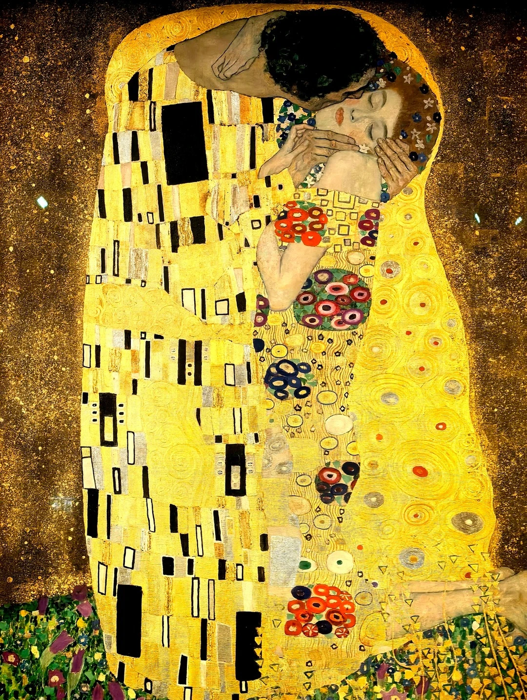
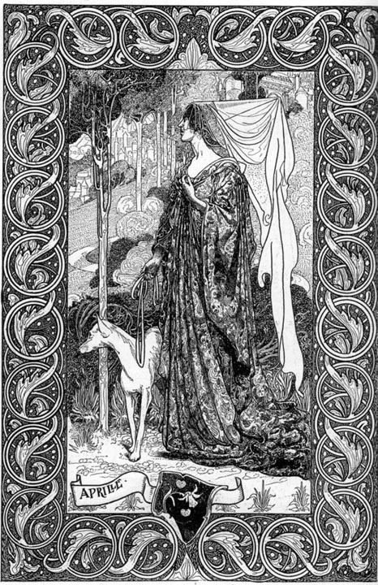

01.
The Master of Elegance
Alphonse Mucha. Known for his graceful women and floral halos. He turned advertising into art, merging commerce with pure poetry.

02.
The Golden Obsession
Gustav Klimt. Taking Art Nouveau to the extremes of gold leaf, mosaics, and intense emotion. Not just flowers, but geometry and flesh.

03.
Black & White Provocation
Aubrey Beardsley. Stripping away the color, leaving only bold, seductive, and sometimes grotesque lines. Inspired by Japanese Ukiyo-e.